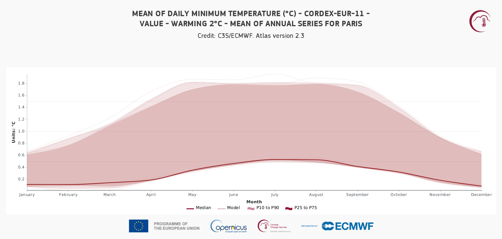
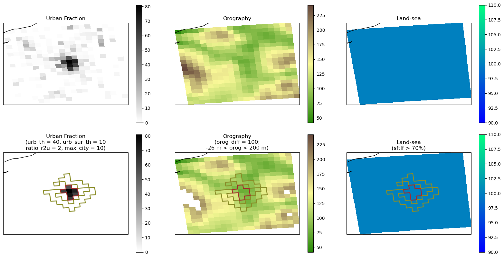
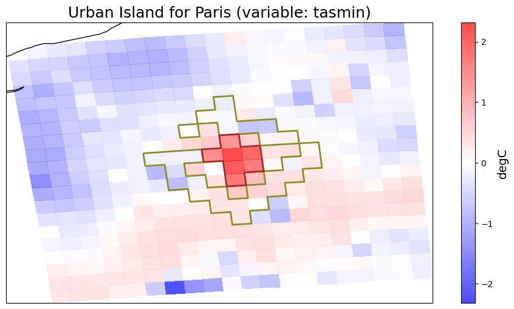
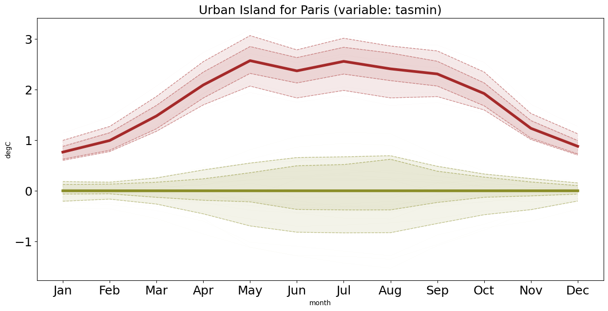

2.7. Urban Heat Island analysis for Paris using C3S Atlas/CORDEX data#
This Jupyter Notebook reproduces the Urban Climate product from the C3S Atlas. This product is only available for high-resolution datasets that incorporate some form of urban representation (bulk or urban canopy model), including CORDEX-CORE, CORDEX-EUR-11, and CERRA. The notebook illustrates the Urban Heat Island (UHI) intensity, or urban–rural contrast, calculated by subtracting rural area temperatures from those of the urban area, based on the model-specific urban mask within each dataset.
Urban and rural surrounding areas are delineated using the static urban fraction variables available in Langendijk, G. S. et al. (2026).
The methodology and python package (URCLIMASK) to delineate urban and rural areas is described in Diez-Sierra, J. et al. (2025).
The selection of cities available in the C3S Atlas is based on Langendijk, G. S. et al. (2025).
This script can be used to extend C3S Atlas products to additional cities and variables.
The figure below shows the Annual cycle of the urban–rural temperature difference (Urban Heat Island, UHI) for mean temperature (°C) from CORDEX-EUR-11 under a 2 °C warming scenario. It can be visualized in the C3S Atlas using the following Permalink.

2.7.1. Supporting Papers#
1. Global Urban-Rural Dataset#
Diez-Sierra, J. et al. (2025). A global CORDEX-based dataset delineating urban areas and their surroundings to assess climate change on megacities. (Scientific Data). https://doi.org/10.1038/s41597-025-06257-1
This work presents the first global RCM-based database of urban and rural areas. It uses model-specific urban fraction variables and static inputs from CORDEX-CORE (global) and EURO-CORDEX (Europe) simulations. Urban and surrounding rural areas are defined for a representative set of megacities at 25 km (global) and 12.5 km (Europe) resolutions.
The paper provides a Python workflow for extending the analysis to additional cities and models, as well as tools for evaluating the urban heat island (UHI) effect.
2. Representation of Urban Areas in Regional Climate Models#
Langendijk, G. S. et al. (2025). Representation of global megacities and their urban heat island in CORDEX-CORE regional climate model simulations. (Urban Sustainability). https://doi.org/10.1038/s42949-025-00325-6.
This study evaluates how CORDEX-CORE models represent urban areas and the urban heat island effect globally. Despite the coarse resolution (~25 km), the models capture the thermal imprint of large cities, with RegCM reproducing nighttime UHI more accurately than REMO.
The study highlights limitations in urban land-surface representation and underestimation of impervious surfaces, providing guidance for improving urban parameterizations in regional climate modeling.
Paris is one of the set of selected cities in Langendijk, G. S. et al. (2025). This selection was used for the C3S Atlas.
2.7.2. Load Python packages and clone and install the c3s-atlas GitHub repository from the ecmwf-projects#
Clone (git clone) the c3s-atlas repository and install it (pip install -e .).
Further details on how to clone and install the repository are available in the requirements section
import xarray as xr
import glob
import os
from datetime import date
import numpy as np
from pathlib import Path
import cdsapi
import matplotlib.pyplot as plt
import cartopy.crs as ccrs
from c3s_atlas.utils import (
season_get_name,
extract_zip_and_delete,
)
from c3s_atlas.customized_regions import (
Mask
)
from c3s_atlas.analysis import (
monthly_weighted_average,
)
from c3s_atlas.products import (
annual_cycle,
)
from c3s_atlas.GWLs import (
load_GWLs,
select_member_GWLs,
get_mean_data_by_months
)
URCLIMASK provides a reproducible and flexible workflow to delineate urban and rural masks from regional climate model simulations.
It enables consistent analysis of urban climate effects and can be easily extended to additional cities and datasets.
from urclimask.urban_areas import (
UrbanVicinity
)
from urclimask.utils import (
kelvin2degC,
traverseDir,
fix_360_longitudes,
RCM_DICT,
load_ucdb_city
)
from urclimask.UHI_analysis import (
UrbanIsland
)
Download climate data with the CDS API#
⚠️ Warning: Exposed API Credentials
For security reasons, it is not recommended to hardcode your Copernicus Climate Data Store (CDS) API credentials — such as
cdsapi_urlandcdsapi_key— directly in notebooks.Instead, it is best to store them securely in a
.cdsapircfile located in your home directory.📄 More info: CDS API - How to use the API
cdsapi_url= "https://cds.climate.copernicus.eu/api"
cdsapi_key= ""
c = cdsapi.Client(url=cdsapi_url, key=cdsapi_key)
Running the code blocks below will download the data from the CDS as specified by the following API keywords:
Variables: Orography; Land Area Fraction
Domain: Europe
Horizontal Resolution: 12.5 km
Temporal Resolution: Fixed
Global Climate Model (GCM): CNRM-CERFACS-CM5
Regional Climate Model (RCM): ICTP-RegCM4.6
Ensemble Member: r1i1p1
Experiment: Historical
Download fixed variables (orography, land area fraction, and urban fraction) required to delineate urban and rural areas.#
dest = Path('./data/CORDEX-EUR-11/') # directory to download the files
os.makedirs(dest, exist_ok=True)
filename_orog = 'orog_EUR-11_CNRM-CERFACS-CNRM-CM5_historical_r1i1p1_ICTP-RegCM4-6_v2_fx'
dataset = "projections-cordex-domains-single-levels"
request = {
"domain": "europe",
"experiment": "historical",
"horizontal_resolution": "0_11_degree_x_0_11_degree",
"temporal_resolution": "fixed",
"variable": ["orography"],
"gcm_model": "cnrm_cerfacs_cm5",
"rcm_model": "ictp_regcm4_6",
"ensemble_member": "r1i1p1"
}
client = cdsapi.Client()
zip_path = dest / f"{filename_orog}.zip"
client.retrieve(dataset, request).download(zip_path)
extract_zip_and_delete(zip_path)
filename_sftlf = 'sftlf_EUR-11_CNRM-CERFACS-CNRM-CM5_historical_r1i1p1_ICTP-RegCM4-6_v2_fx'
dataset = "projections-cordex-domains-single-levels"
request = {
"domain": "europe",
"experiment": "historical",
"horizontal_resolution": "0_11_degree_x_0_11_degree",
"temporal_resolution": "fixed",
"variable": [
"land_area_fraction",
],
"gcm_model": "cnrm_cerfacs_cm5",
"rcm_model": "ictp_regcm4_6",
"ensemble_member": "r1i1p1"
}
client = cdsapi.Client()
zip_path = dest / f"{filename_sftlf}.zip"
client.retrieve(dataset, request).download(zip_path)
extract_zip_and_delete(zip_path)
The urban fraction variable used in this analysis was obtained from: Langendijk, G. S. et al. (2025). CORDEX-CORE urban and impervious surface area dataset (v1.0.0). Zenodo. https://doi.org/10.5281/zenodo.15700267. A example for ICTP-RegCM4.6 model is included in the reference-grids folder.
filename_sfturf = "sftimf_EUR-11_ICTP_RegCM4-6_v1_fx"
2.7.3. Define urban and rural surrounding areas#
The methodology proposed in this study relies on three static variables commonly available in most RCM outputs: urban fraction (sfturf or sftimf), orography (orog), and land area fraction (sftlf). The algorithm can be briefly described as follows. A minimum threshold for the UF determines the grid cells representing the city in the model. Potential rural surrounding areas are then determined based on three main criteria: (1) grid cells must have UF values below a specified threshold; (2) large water bodies (lakes, oceans, and rivers) are excluded via a minimum land area fraction threshold; and (3) grid cells with an elevation difference above a threshold with respect to the urban area are excluded to avoid the effect of altitude on temperature (i.e., adiabatic lapse rate). Grid cells complying with these criteria are selected as candidate rural surroundings areas. The final rural surrounding area is obtained from this candidate grid cells through an iterative morphological dilation process expanding outward from the urban cells. Iterations stop when the number of rural cells reaches a predefined ratio relative to the number of urban cells.
A full description of the methodology can be found at Diez-Sierra, J. et al. (2025).
Parameters#
The parameters used to delineate urban areas and their rural surroundings are defined in Diez-Sierra, J. et al. (2025).
The following table describes the hyperparameters implemented in the algorithm.
Hyperparameter |
Description |
|---|---|
|
Longitude and latitude of the city center. |
|
Geographic boundaries of the study area (including city surroundings) relative to the city center ( |
|
Urban fraction threshold (%). Grid cells with urban fraction values above this threshold are classified as urban cells. |
|
Urban surrounding threshold (%). Grid cells with urban fraction values below this threshold are candidates for rural surroundings. Defaults to |
|
Maximum elevation difference (in meters) relative to the range (max–min) of urban cell elevations ( |
|
Minimum land area fraction (%) required to include a grid cell in the analysis. |
|
Minimum size (in number of edge-connected cells) for urban clusters to be retained. Urban clusters are excluded, except for the main cluster nearest to |
|
Ratio of rural to urban grid cells. The iterative dilation process stops once this ratio is achieved. |
city = 'Paris'
lon_city = 2.35
lat_city = 48.85
domain = 'EUR-11'
model = 'RegCM'
scenario = "evaluation"
urban_var = 'sftimf'
urban_th = 40
urban_sur_th = 10
orog_diff = 100
sftlf_th = 70
ratio_r2u = 2
min_city_size = 10
lon_lim = 1
lat_lim = 1
project = "CORDEX"
scenario = "historical"
var = 'tasmin'
Infer domain resolution in degrees and create filename
domain_resolution = int(domain.split('-')[1])
base_filename = f'{city}-{domain}_ECMWF-ERA5_{scenario}_r1i1p1f1_{model}'
Download minimum temperature to compute UHI intensity#
Running the code blocks below will download the data from the CDS as specified by the following API keywords:
Variables: Minimum temperature
Domain: Europe
Horizontal Resolution: 12.5 km
Temporal Resolution: daily
Global Climate Model (GCM): CNRM-CERFACS-CM5
Regional Climate Model (RCM): ICTP-RegCM4.6
Ensemble Member: r1i1p1
Experiment: Historical
client = cdsapi.Client()
for start_year in range(1970, 2005, 2):
end_year = start_year + 1
filename = dest / f"{base_filename}_{start_year}-{end_year}.zip"
request = {
"domain": "europe",
"experiment": "historical",
"horizontal_resolution": "0_11_degree_x_0_11_degree",
"temporal_resolution": "daily_mean",
"variable": ["minimum_2m_temperature_in_the_last_24_hours"],
"gcm_model": "cnrm_cerfacs_cm5",
"rcm_model": "ictp_regcm4_6",
"ensemble_member": "r1i1p1",
"start_year": [str(start_year), str(end_year)],
"end_year": [str(start_year), str(end_year)],
}
print(f"Downloading {start_year}-{end_year}...")
client.retrieve(dataset, request).download(str(filename))
# Extraer y borrar ZIP
extract_zip_and_delete(filename)
Load static variables#
Load static variables, such as urban fraction (sfturf), terrain elevation (orography) or land-sea fraction (sftlf).
sfturf_path = f"../../auxiliar/reference-grids/{filename_sfturf}.nc"
orog_path = dest / f"{filename_orog}.nc"
sftlf_path = dest / f"{filename_sftlf}.nc"
ds_sfturf = xr.open_dataset(sfturf_path)
ds_orog = xr.open_dataset(orog_path)
ds_sftlf = xr.open_dataset(sftlf_path)
ds_sfturf = fix_360_longitudes(ds_sfturf)
ds_orog = fix_360_longitudes(ds_orog)
ds_sftlf = fix_360_longitudes(ds_sftlf)
Add parameters to the function
URBAN = UrbanVicinity(
urban_sur_th = urban_sur_th,
orog_diff = orog_diff,
sftlf_th = sftlf_th,
ratio_r2u = ratio_r2u,
min_city_size = min_city_size,
lon_city = lon_city,
lat_city = lat_city,
lon_lim = lon_lim,
lat_lim = lat_lim,
model = model,
domain = domain,
urban_th = urban_th,
urban_var = urban_var
)
Crop area around the city
ds_sfturf = URBAN.crop_area_city(ds = ds_sfturf, res = domain_resolution)
ds_orog = URBAN.crop_area_city(ds = ds_orog, res = domain_resolution)
ds_sftlf = URBAN.crop_area_city(ds = ds_sftlf, res = domain_resolution)
Define the urban mask#
sfturf_mask, sfturf_sur_mask, orog_mask, sftlf_mask = URBAN.define_masks(
ds_sfturf = ds_sfturf,
ds_orog = ds_orog,
ds_sftlf = ds_sftlf,
)
Define rural vicinity areas#
urmask = URBAN.select_urban_vicinity(
sfturf_mask = sfturf_mask,
orog_mask = orog_mask,
sftlf_mask = sftlf_mask,
sfturf_sur_mask = sfturf_sur_mask
)
Plot the static variables and the urban and rural vicinity mask#
fig = URBAN.plot_static_variables(ds_sfturf = ds_sfturf,
ds_orog = ds_orog,
ds_sftlf = ds_sftlf,
sfturf_mask = sfturf_mask,
orog_mask = orog_mask,
sftlf_mask = sftlf_mask,
urban_areas = urmask,
composite = False)

Urban and rural areas correspond to the red and green polygons, respectively. The land–sea mask represents the percentage of land (i.e., non-water surface) within each grid cell. Orography and the land–sea mask are used to exclude rural cells with large elevation differences or a high percentage of water relative to the urban cells, ensuring consistency, as these factors can affect climate variables when comparing urban and rural areas.
2.7.4. Calculate Urban Heat Island (UHI)#
Load climate variable#
nc_files = sorted(dest.glob(f"{base_filename}*.nc"))
ds_RCM = xr.open_mfdataset(
nc_files,
combine="by_coords",
parallel=True
).sortby("time")
ds_RCM = fix_360_longitudes(ds_RCM)
ds_RCM = kelvin2degC(ds_RCM, var)
ds_RCM = fix_360_longitudes(ds_RCM)
ds_RCM = URBAN.crop_area_city(ds = ds_RCM, res = domain_resolution)
UHI = UrbanIsland(
ds = ds_RCM[var],
urban_vicinity = urmask,
anomaly = 'abs')
Urban Heat Island Climatology Map#
The plot_UI_map function computes the monthly mean of a given dataset.
It first calculates the average temperature for the rural cells selected in previous steps, and then subtracts this mean from all cells to obtain the spatial anomaly or urban-rural contrast.
Plot Interpretation
Urban–rural contrast of nocturnal (tasmin) temperature
Red polygon areas: Urban areas
Green polygon areas: Rural areas
This visualization clearly highlights the Urban Heat Island intensity.
fig = UHI.plot_UI_map(
city_name = city)

Urban Heat Island Annual Cycle#
The plot_UI_annual_cycle function computes the monthly spatial mean of a given dataset.
It first calculates the average temperature for the rural cells selected in previous steps, and then subtracts this mean from all cells to obtain the anomaly or urban-rural contrast.
Plot Interpretation
Red lines: Temperature anomaly in urban areas relative to the average of rural cells.
Green lines: Temperature anomaly in rural areas relative to the average of rural cells.
Thicker and dashed lines: Represent the average anomaly and the percentiles (10, 25, 75, and 90).
This visualization clearly highlights the differences in annual cycles between urban and rural regions.
fig = UHI.plot_UI_annual_cycle(
percentiles = [10, 25],
gridcell_series = True,
city_name = city)

In contrast to the results presented in the first figure of the script, which depict the full model ensemble, this figure shows results for a single model, illustrating the spatial variability of the Urban Heat Island effect as a function of the specific grid cell analyzed.